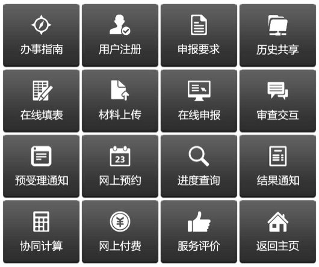

一、 移动办事大厅作用
在城市各类电子公共服务平台中，“移动办事大厅”（简称大厅）是最先进、最具实效的公共服务云平台。
本大厅采用松耦合的集成服务架构能很方便接入省、市、区（县）各级政务职能部门和其他机构的大量服务事项，并以智能手机客户端的形式向广大市民和企业统一推送快捷的服务；用户访问大厅，仿佛进入一个大型虚拟“服务商店”，不仅能从手机客户端查看到各个事项，了解办事指南，而且轻松操作全流程申报键盘就能在线申办所有服务事项；其中针对申请材料电子化，证照批文共享及协同事项审批等网上审批三大难点问题，大厅均给出创新设计和推进机制，从而使全部审批事项上网办理不只是停留在形式上，而是真正达到使用效果的落地。
使用本大厅能给用户带来如下便利：
（1）随时随地从手机客户端获取政务公开和重大新闻信息。
（2）由手机客户端能统一进入多种政民互动渠道进行互动。
（3）采用事项分类图标能引导用户查找和申报上千个事项。
（4）配备全流程申报键盘方便用户统一完成事项申报操作。
（5）为用户设置空间积累申报材料实现一次填报长期共享。
（6）采用步进式计算控制流程实现跨部门跨层级协同审批。
（7）与相关银行卡系统对接在手机上即可办理网上收费。
（8）集成短信微信等通信工具方便业务人员与用户交流。
二、 大厅总体功能
大厅的总体功能包括政务公开、网上办事、协同办事、政民互动、便民服务、重要新闻、在办事项、我的订阅等八个栏目。
（1） 政务公开，组合了重要新闻、政府通知和移动大厅使用说明三个栏目。
（2） 网上办事，将众多政务服务事项按个人办事、企业办事以及按部门所属等划分并以分类图标形式加以展示，点击图标可进一步给出所对应的各个具体事项供用户选择。
如果用户熟悉具体事项名称，可直接输入关键字查询该事项。
（3） 协同办事，展示经过政府梳理可以并联审批的一些事项，主要是企业设立登记并联审批事项和投资项目并联审批事项。
（4） 政民互动，包括：网上咨询、网上投诉、微调查、政府热线、领导信箱、网络问政、微博、微信等栏目。
（5） 便民服务，包括：移动话费、餐饮美食、社保、家政服务、交通违法、公积金查询、社区服务、数据服务等栏目。
（6） 重要新闻，转发新华社、中央电视台及本地电视台等媒体连续七天的重要新闻。
（7） 在办事项，记录用户已经着手办理但未办完的各个事项，系统保留中断现场，以便继续完成后续操作。并且能及时显示业务人员在预受理中发出的提示信息。
（8） 我的订阅，用来展示用户从城市信息服务总栈和本系统订阅的服务信息。
三、 大厅操作功能
1、 全流程申报键盘
对于网上办事、协同办事、便民服务、在办事项等业务办理，大厅提供由16个按键组成的全流程申报键盘，供用户完成申报事项的各项操作。
16个键的申报键盘为：

整个键盘给出了在申报事项中所需要的全部操作功能按键，各个按键大致上按申报事项的流程顺序进行编排，但相互是独立的，用户在使用中根据实际需要进行操作，一般只需按3-5键即可完成事项在线申报，并不是每次申报所有键盘都必须使用。省略按键的情况包括：
（1） 办事指南不一定每次申报都要看。
（2） 用户注册只需注册一次，下次则不需要。
（3） 在申报内容共享利用空间存储的信息时，可省去在线填表和资料上传。
（4） 一次没操作完暂停的事项，下次只需操作后续按键。
（5） 协同计算只在协同审批事项时使用。
（6） 交互沟通、网上预约、网上付费、进度查询等由用户选择使用。等等。
2、 各按键功能
（1） 办事指南，显示办理对象，办理依据，办理条件，所需材料，窗口办理流程，网上办理流程，办理时限，收费标准，常见问题解答，办理窗口设置等信息。
（2） 申报要求，显示在线填表要求、大附件要求、证照要求等信息。
（3） 用户注册，分为个人、企业两种用户，系统给出注册内容框供填报。
（4） 历史共享，调取用户空间中积累的电子化材料与申报材料要求进行比对，通过比对找出可共享的和未能共享的电子化材料（表单、附件、证照等），提示用户填报和上传未能历史共享的电子化材料。
（5） 在线填表，对于需要在线填表的数据项操作手机键盘进行输入。
（6） 材料上传，根据系统给出的提示，用户利用此键或使用手机或使用互联网向个人空间或企业空间上传电子化材料。
（7） 在线申报，分为申报、暂存两种情况。对于申报情况，利用此键将准备好的电子化材料发送给指定业务部门进行网上预受理。
（8） 审查交互，平台提供短信、微信、电话通信手段，实现业务预审人员与申请人之间信息沟通。
（9） 预受理通知，当申报事项通过预受理后，客户端会收到预受理通知提示，点击该键可查阅通知的具体内容（纸质材料递交清单、办理地点、联系电话、交通指引等）。
（10） 网上预约，利用此键调出预约时段表供用户填写前去办事窗口递交材料的日期和时间段。
（11） 进度查询，根据业务编号查询申报事项、办理进度和办理状态等。
（12） 结果通知，业务办结后，客户端会收到办理结果通知提示，点击该键可查阅通知内容。
（13） 服务评价，用户对业务人员服务质量进行评价，选择非常满意、满意、比较满意、一般、不满意或填写具体意见。
（14） 网上付费，对于收费项目可用手机操作办理网上收费。
（15） 协同计算，按步进式进行各个协同审批事项申报，即在一项申报完成后，按此键由系统计算下一步应转向的申报事项，直至全部完成为止。当所指示的为多个事项时，应逐一完成各个申报，然后向下转移。详细操作另行通知。
（16） 返回主页，即直接跳转客户端主页面。
四、 温馨提示
用户在使用中如果遇到问题，请拨打移动办事大厅服务热线反映。热线电话：4008609866。